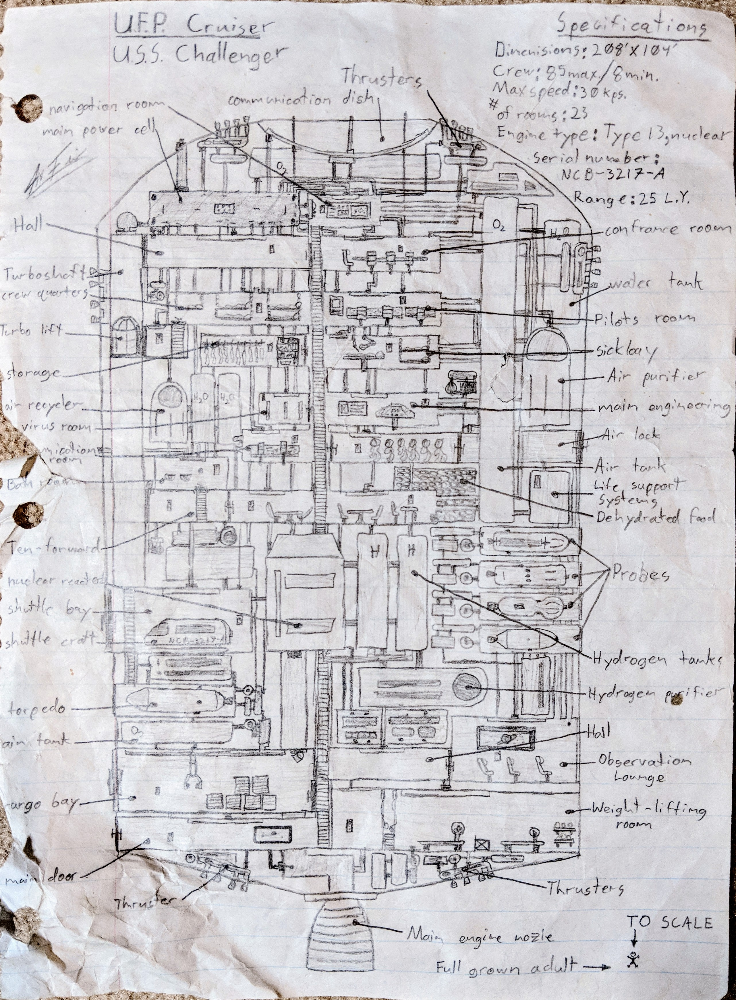
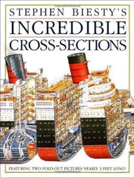
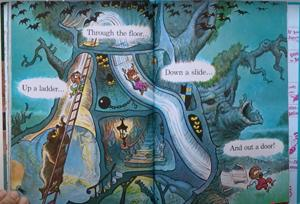

This is a cross section of a spaceship I "designed" around 6th grade-ish, circa 1992-ish? Found it not long ago tucked away in an old book collecting dust. I remember the wiring, pipes, everything actually went somewhere and was meant for something. Nothing was just for looks and everything served a purpose.


I was obsessed with how things worked as far back as I can remember. I wanted to see inside, see how the gears turned and the cogs spun. I had natural ecosystem posters hanging on my bedroom walls growing up that were cut away showing the creatures under ground, under water, and inside trees. This page from The Berenstain Bears and the Spooky Old Tree is forever cemented as one of my earliest, most cherished childhood memories. And Stephen Biesty's Incredible Cross-sections was one of my favorite books of all time and would keep me engaged for hours.
Drawing for me was a way of interacting with these concepts. Instead of passively consuming the pictures I was able to play with them and rearrange them any way I wanted. And the act of physically drawing each line forces you to actively engage, and in turn, fully appreciate every little detail. Unfortunately, of the dozens and dozens of these I made throughout my childhood this seems to be the only one that survived. Just looking at it now brings back so many memories.

- I was also a very big Star Trek TNG fan and watched it practically every night before bed. Hence the easter eggs like shuttle crafts and "Ten Forward". Ah, the good 'ol days.